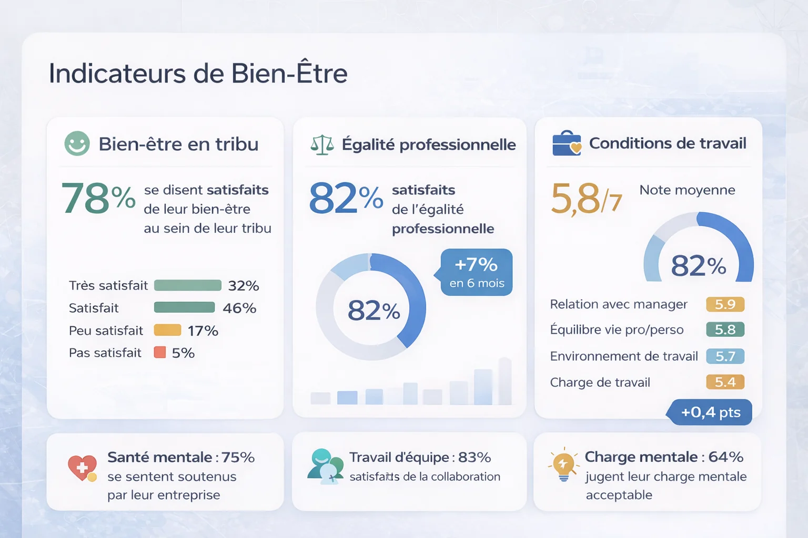

Projet
OHC (OCTO Technology)Récolter et transformer en décisions des données de bien-être au travail
Contexte et objectif
L’entreprise disposait de multiples questionnaires internes pour mesurer le bien-être des collaborateurs. Plusieurs entités avait leur propre dispositif, souvent basé sur des questions déclaratives, avec des formats et des fréquences de collecte variables. Les résultats restaient difficiles à interpréter et surtout à transformer en actions concrètes.
Des données existaient, mais elles n’étaient ni suffisamment robustes, ni comparables dans le temps, ni adaptée à l'ensemble des entités de l'entreprise, ni réellement exploitables pour orienter des décisions à l’échelle de l’organisation.
Je venais d'arriver dans l'entreprise en tant que consultante product designer, mon doctorat et mes compétences en recherche scientifique et en analyse de données m'ont rapidement amené à être sollicitée pour structurer une nouvelle approche de mesure du bien-être, plus rigoureuse, plus fiable et surtout plus actionnable. Je suis restée en charge de ce sujet durant mes 4 ans chez OCTO, en étroite collaboration avec les équipes RH et management.
Ma démarche
L’enjeu principal n’était pas seulement de mesurer le bien-être, mais de construire un outil capable de produire des analyses fiables et utiles pour l’entreprise.
Construire une base fiable
- Appui sur la littérature scientifique pour définir les dimensions du bien-être
- Construction d’un questionnaire structuré et cohérent
- Validation statistique (analyses factorielles)
Rendre les données lisibles
- Analyses quantitatives et qualitatives croisées
- Segmentation des résultats (entité, ancienneté, etc.)
- Visualisation des tendances et des écarts
Passer à l’action
Le vrai enjeu était d’éviter un outil “qui mesure” sans jamais agir. J’ai donc structuré les restitutions pour faire émerger :
- des tendances claires
- des points de friction identifiables
- des leviers d’amélioration directement exploitables
Les livrables



Les résultats
Résultats produit
Résultats business
Le projet a permis de passer d’un dispositif déclaratif à un véritable outil d’aide à la décision, capable d’orienter des actions à l’échelle de l’entreprise.
Ce que j'ai apporté
Ce projet illustre ma capacité à faire le lien entre rigueur scientifique, analyse de données et prise de décision.
J’aime travailler sur des sujets complexes, où l’enjeu n’est pas seulement de produire de la donnée, mais de la rendre compréhensible, utile et actionnable pour les organisations.